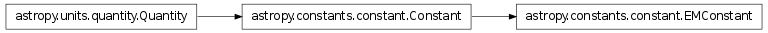

astropy.constants contains a number of physical constants useful in Astronomy. Constants are Quantity objects with additional meta-data describing their provenance and uncertainties.
To use the constants in S.I. units, you can import the constants directly from the astropy.constants sub-package:
>>> from astropy.constants import G
or, if you want to avoid having to explicitly import all the constants you need, you can simply do:
>>> from astropy import constants as const
and then subsequently use for example const.G. Constants are fully-fleged Quantity objects, so you can easily convert them to different units for example:
>>> print const.c
Name = Speed of light in vacuum
Value = 299792458.0
Error = 0.0
Units = m / (s)
Reference = CODATA 2010
>>> print const.c.to('km/s')
299792.458 km / (s)
>>> print const.c.to('pc/yr')
0.306594845466 pc / (yr)
and you can use them in conjunction with unit and other non-constant Quantity objects:
>>> F = (const.G * 3. * const.M_sun * 100 * u.kg) / (2.2 * u.au) ** 2
>>> print F.to(u.N)
0.367669392028 N
It is possible to convert most constants to cgs using e.g.:
>>> const.c.cgs
<Quantity 29979245800.0 cm / (s)>
However, some constants are defined with different physical dimensions in cgs and cannot be directly converted. Because of this ambiguity, such constants cannot be used in expressions without specifying a system:
>>> 100 * const.e
ERROR: TypeError: Constant 'e' does not have physically compatible units
across all systems of units and cannot be combined with other values without
specifying a system (eg. e.esu) [astropy.constants.constant]
...
>>> 100 * const.e.esu
<Quantity 4.80320450571e-08 Fr>
Contains astronomical and physical constants for use in Astropy or other places.
A typical use case might be:
>>> from astropy.constants import c, m_e
>>> # ... define the mass of something you want the rest energy of as m ...
>>> m = m_e
>>> E = m * c**2
>>> E.to('MeV')
<Quantity 0.510998927603 MeV>
The following constants are available:
| Name | Value | Unit | Description |
|---|---|---|---|
| G | 6.67384e-11 | m3 / (kg s2) | Gravitational constant |
| L_sun | 3.846e+26 | W | Solar luminosity |
| M_earth | 5.9742e+24 | kg | Earth mass |
| M_jup | 1.8987e+27 | kg | Jupiter mass |
| M_sun | 1.9891e+30 | kg | Solar mass |
| N_A | 6.02214129e+23 | 1 / (mol) | Avogadro’s number |
| R | 8.3144621 | J / (K mol) | Gas constant |
| R_earth | 6378136 | m | Earth equatorial radius |
| R_jup | 71492000 | m | Jupiter equatorial radius |
| R_sun | 695508000 | m | Solar radius |
| Ryd | 10973731.6 | 1 / (m) | Rydberg constant |
| au | 1.49597871e+11 | m | Astronomical Unit |
| c | 299792458 | m / (s) | Speed of light in vacuum |
| e | 1.60217657e-19 | C | Electron charge |
| h | 6.62606957e-34 | J s | Planck constant |
| hbar | 1.05457173e-34 | J s | Reduced Planck constant |
| k_B | 1.3806488e-23 | J / (K) | Boltzmann constant |
| kpc | 3.08567758e+19 | m | Kiloparsec |
| m_e | 9.10938291e-31 | kg | Electron mass |
| m_n | 1.67492735e-27 | kg | Neutron mass |
| m_p | 1.67262178e-27 | kg | Proton mass |
| pc | 3.08567758e+16 | m | Parsec |
| sigma_sb | 5.670373e-08 | W / (K4 m2) | Stefan-Boltzmann constant |
| Constant(abbrev, name, value, unit, ...[, ...]) | A physical or astronomical constant. |
| EMConstant(abbrev, name, value, unit, ...[, ...]) | An electromagnetic constant. |
